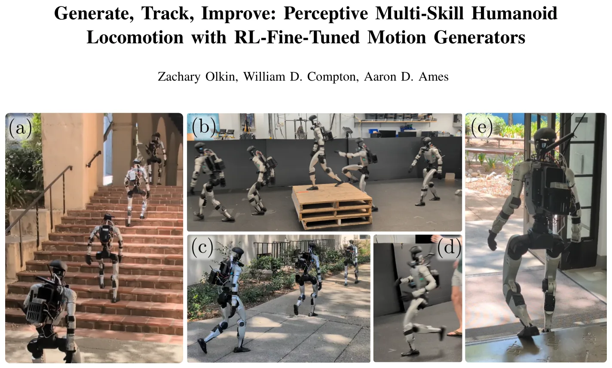
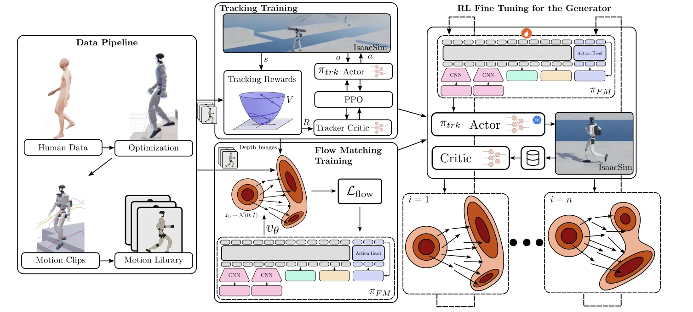
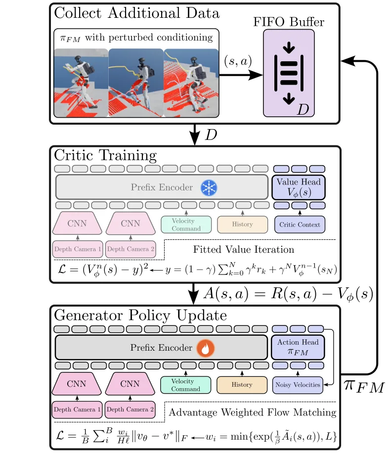
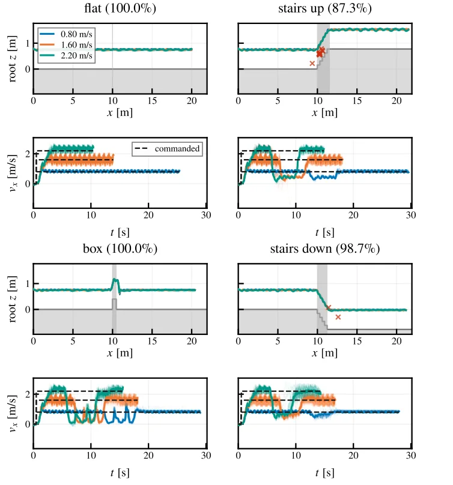

O problema: robôs humanoides ainda não vão a qualquer lugar
Robôs humanoides já demonstraram habilidades impressionantes em laboratório: caminhar, correr, fazer parkour, subir escadas. Mas a maioria dos controladores é especializada em uma única tarefa ou depende de mapas de altura e odometria precisa, o que dificulta a operação em ambientes reais e externos. Controladores multi-propósito existem, mas costumam ignorar percepção e terreno. Controladores perceptivos existem, mas raramente cobrem múltiplas habilidades ou velocidades comandadas.
Este paper apresenta uma arquitetura em duas camadas para locomoção humanoide que é multi-habilidade, perceptiva, dinâmica e robusta o suficiente para operar ao ar livre. A primeira camada é um gerador de movimentos que planeja trajetórias de corpo inteiro a partir de imagens de profundidade brutas. A segunda camada é uma política de rastreamento treinada com RL que segue essas trajetórias em tempo real. Ambas as políticas usam câmeras de profundidade diretamente, sem precisar de odometria ou mapas de altura.
A contribuição central é um loop de ajuste fino com RL off-policy que melhora o gerador de movimentos depois que ele já foi treinado. Esse loop usa busca estruturada para coletar dados e advantage-weighted regression (AWR) para atualizar o gerador. O resultado é um aumento de até 25 pontos percentuais na taxa de sucesso em terrenos não vistos e até 80 pontos percentuais na escolha correta de habilidades. Um único par de políticas permite que o robô humanoide Unitree G1 ande, corra, fique parado, pule sobre caixas e suba escadas em ambientes externos.

Arquitetura em duas camadas: gerar e rastrear
A arquitetura separa planejamento e execução. O gerador de movimentos roda a 4 Hz (uma vez a cada 0,24 segundos) e produz trajetórias de corpo inteiro de 1,24 segundo de duração. Ele recebe a velocidade desejada, sua ação anterior e imagens de profundidade de duas câmeras. A política de rastreamento roda a 50 Hz e recebe informação proprioceptiva e uma imagem de profundidade para calcular torques nas juntas.
Essa separação traz modularidade: é fácil adicionar novas habilidades desde que o rastreador seja geral o suficiente. Também permite dividir a computação: o rastreador é leve e rápido, enquanto o gerador pode ser maior e mais lento. A abordagem contrasta com métodos que destilam múltiplos especialistas em uma única política ou que produzem trajetória e ação ao mesmo tempo.
Ambas as políticas são perceptivas. Usar imagens de profundidade brutas elimina a necessidade de mapas de altura ou odometria, facilitando o deployment externo. Com duas câmeras, a política vê terreno mais à frente e ajusta a velocidade autonomamente para atravessá-lo, mesmo que o comando de velocidade seja diferente.
Criando a biblioteca de movimentos: otimização dinâmica de dados humanos
O método exige clipes de movimento conscientes do terreno para treinar rastreador e gerador. Os autores partem de dados de captura de movimento humano do dataset bones-seed e criam referências otimizadas dinamicamente, semelhante a trabalhos anteriores que usam otimização de trajetória.
São gerados 252 movimentos de estado estacionário em terreno plano: caminhada reta (frente e trás), diagonal, com giro, giro no lugar, passo lateral, corrida reta e corrida com giro. Isso dá ao robô capacidade de locomoção omnidirecional. Além disso, 46 movimentos para pular sobre caixas e subir e descer escadas são criados.
A otimização usa formulação de múltiplos disparos com restrições de estado e MuJoCo como backend de dinâmica. Isso permite pequenas mudanças no cronograma de contato diferenciando através da dinâmica de contato do MuJoCo, mantendo estabilidade. As restrições de estado impõem periodicidade (estado final igual ao inicial) e velocidade média, ajustando o movimento para a velocidade exata desejada.
Para movimentos em terreno, o dataset não tem informação de terreno ground truth. Os autores colocam terreno para combinar com o movimento, rodam a otimização e extraem informação de contato ground truth da simulação, filtrando forças de contato. Com essa informação, fazem retargeting cinemático do robô para várias dimensões de terreno usando offsets nos pés e cinemática inversa. Depois, rodam a otimização dinâmica novamente para obter um movimento suave e viável.
Treinando o rastreador: CLF-RL com mimic e percepção
A política de rastreamento é treinada com uma variante de RL chamada CLF-RL (Control Lyapunov Function RL), que combina recompensas de imitação (mimic) com recompensas de controle. A recompensa de imitação penaliza diferenças entre a trajetória do robô e a referência otimizada. A recompensa de controle penaliza torques altos, contatos indesejados e outras violações.
O rastreador recebe como entrada o estado proprioceptivo (posições e velocidades das juntas, orientação do tronco) e uma imagem de profundidade de uma câmera frontal. A imagem passa por um encoder convolucional que extrai features visuais. Essas features são concatenadas com a informação proprioceptiva e alimentam uma rede MLP que produz torques nas juntas.
O treinamento usa PPO (Proximal Policy Optimization), algoritmo on-policy padrão em RL para controle. A política é treinada em simulação com randomização de domínio: massa, inércia, atrito, atrasos de atuador e ruído de sensor são variados para aumentar robustez na transferência para hardware real.
Treinando o gerador: flow matching condicional
O gerador de movimentos é treinado com flow matching, uma técnica de modelo generativo que aprende a transformar ruído em trajetórias estruturadas. O modelo é condicionado na velocidade desejada, na ação anterior (para continuidade temporal) e em imagens de profundidade de duas câmeras.
A arquitetura do gerador é um transformer. Um prefix encoder processa as condições (velocidade, ação anterior, imagens) e produz tokens de contexto. Esses tokens são concatenados com tokens de ruído que representam a trajetória a ser gerada. O transformer então processa tudo e produz uma trajetória de corpo inteiro de 1,24 segundo.
O treinamento usa a biblioteca de movimentos otimizados como dados. Para cada movimento, o modelo aprende a reconstruir a trajetória a partir de ruído, condicionado nas imagens de profundidade sintéticas renderizadas do terreno correspondente. Isso ensina o gerador a produzir movimentos consistentes com o terreno visível nas câmeras.

O ajuste fino off-policy: busca estruturada e AWR
Depois de treinado, o gerador pode produzir movimentos para terrenos vistos no treinamento, mas falha em composições de tarefas não vistas (como pular sobre uma caixa e depois pular para baixo na mesma trajetória) e geometrias fora da distribuição. O ajuste fino com RL resolve isso.
O loop de ajuste fino tem três etapas. Primeira: coleta de dados com busca estruturada. O gerador produz 50 amostras de trajetória para cada configuração de terreno. O rastreador tenta executar cada trajetória em simulação e coleta recompensas. Segunda: treinar um crítico (value function) que estima o retorno esperado de cada trajetória. Terceira: atualizar o gerador com advantage-weighted regression (AWR).
AWR é um algoritmo off-policy que pesa cada amostra pela exponencial da vantagem (advantage). Amostras com alta vantagem (trajetórias que levaram a alto retorno) recebem peso maior no gradiente. Isso permite reusar dados coletados, tornando o método muito mais eficiente em amostras do que ajuste fino on-policy residual.
A busca estruturada é crítica. Em vez de amostragem pura do gerador, os autores usam um método de busca que varia sistematicamente as condições de entrada (velocidade, ruído) para explorar o espaço de trajetórias. Isso aumenta a diversidade dos dados coletados e melhora a cobertura de comportamentos úteis.
Resultados: ajuste fino melhora escolha de habilidades e consistência com terreno
Os autores testaram o ajuste fino em quatro configurações de terreno: caixas (1-2 caixas de larguras e alturas variadas), escadas (subir e descer com paredes laterais), multi-terreno (combinação de caixas, escadas e entrada de prédio realista com dois lances de escada) e terreno in-distribution (usado no treinamento original).
As três primeiras configurações são out-of-distribution: a política nunca foi treinada para pular sobre uma caixa e depois pular para baixo na mesma trajetória, larguras de caixa foram variadas, paredes foram adicionadas ao redor de escadas, e terrenos inteiramente novos (como a entrada de prédio) foram incluídos.
O ajuste fino aumentou a taxa de sucesso em até 25 pontos percentuais. Sucesso significa alcançar a área de objetivo sem cair e dentro do tempo limite. A penalidade média de contato diminuiu, mostrando melhor concordância entre terreno e trajetória. Mais impressionante: a escolha correta de modo (habilidade) melhorou em até 80 pontos percentuais. Em um terreno de escadas, a taxa de escolha correta subiu de 0% para cerca de 80%.
Modo aqui se refere à habilidade usada para atravessar o terreno: trajetória de escada, pulo sobre caixa, caminhada, etc. Os autores coletaram 50 amostras por política e por terreno, embaralharam aleatoriamente e pediram a um humano para rotular cada modo escolhido. Se o humano não conseguia determinar o tipo de modo, contava como incorreto.

Percepção com duas câmeras: o robô vê o que vem e ajusta a velocidade
Usar duas câmeras de profundidade permite que o robô veja terreno mais à frente e ajuste sua velocidade autonomamente. Os autores testaram isso comparando políticas com uma câmera versus duas câmeras em terrenos de caixas e escadas.
Com duas câmeras, a taxa de sucesso em caixas aumentou de 94% para 100% e em escadas de 76% para 88%. Mais importante: o robô desacelera ao se aproximar de terreno desafiador, mesmo quando comandado a manter velocidade constante. Isso mostra que a política aprendeu a modular velocidade com base no que vê à frente, não apenas no comando.
Esse comportamento é crítico para robustez no mundo real. Terrenos inesperados aparecem, e o robô precisa reagir. Com uma câmera, ele só vê o terreno quando está muito perto. Com duas câmeras, ele antecipa e ajusta.

Deployment em hardware: Unitree G1 no mundo real
As políticas foram deployadas no robô humanoide Unitree G1 em ambientes internos e externos. O robô subiu uma escada real de 15 degraus, incluindo transições para entrar e sair da escada. Pulou sobre uma caixa, caminhou sobre ela e pulou para baixo. Caminhou ao ar livre com curvas. Correu em espaços internos. Desceu escadas reais.
Todas essas habilidades vêm de um único par de políticas: o gerador ajustado com RL multi-terreno e o rastreador perceptivo. Não há troca de controlador entre habilidades. O gerador escolhe a trajetória apropriada com base na velocidade comandada e nas imagens de profundidade, e o rastreador executa.
Os autores reportam que as políticas criaram movimentos humanos, dinâmicos e robustos o suficiente para deployment. O robô foi capaz de atravessar escadas longas no mundo real, pular sobre, caminhar e pular de caixas, andar e correr. A arquitetura é facilmente extensível a mais habilidades, tornando-a adequada para humanoides de propósito geral.
Comparação de algoritmos: AWR vence PPO em ajuste fino
Os autores compararam AWR com PPO para o ajuste fino do gerador. AWR superou PPO em todas as métricas: taxa de sucesso, penalidade de contato e escolha de modo. PPO, sendo on-policy, descarta dados antigos e precisa de muito mais rollouts para convergir.
Também testaram usar apenas o rastreador sem gerador, treinando-o diretamente com PPO para produzir ações. Essa abordagem falhou: a taxa de sucesso foi muito menor e a política não conseguiu generalizar para terrenos complexos. Isso valida a escolha da arquitetura em duas camadas.
Ablations: o que importa no pipeline de dados?
Os autores fizeram ablations para entender o que importa na criação da biblioteca de movimentos. Testaram usar dados humanos brutos sem otimização dinâmica, usar apenas otimização sem retargeting cinemático para múltiplas geometrias, e usar a pipeline completa.
A pipeline completa (otimização dinâmica + retargeting cinemático + variação de geometrias) teve melhor desempenho. Sem otimização, as trajetórias não eram fisicamente viáveis e o rastreador falhava. Sem retargeting para múltiplas geometrias, a política não generalizava para alturas de caixa ou degraus não vistos.
Também testaram o efeito de adicionar transições suaves entre movimentos na biblioteca. Transições melhoraram a taxa de sucesso em composições de tarefas (como pular sobre uma caixa e depois pular para baixo), mas não foram críticas para habilidades isoladas.
Limitações: recompensas manuais, falta de semântica e escala
Os autores são honestos sobre limitações. O ajuste fino com RL usa recompensas desenhadas à mão. Embora sejam bastante gerais, podem não se estender a qualquer movimento possível. Usar apenas informação de profundidade limita a informação semântica: pode haver objetos em forma de caixa que não queremos pular, e a política não tem como saber.
O pipeline de dados ainda requer ajuste manual de hiperparâmetros de transição e escolha de movimentos de referência humanos, feita por heurística ou por um humano. Essas limitações precisam ser resolvidas antes que o método possa realmente escalar para qualquer movimento.
Finalmente, os experimentos foram feitos em um único robô (Unitree G1) e em um conjunto limitado de terrenos. Não está claro como o método se transfere para outros humanoides com cinemática ou dinâmica diferentes, ou para terrenos muito mais complexos como escadas em espiral, terreno irregular natural ou superfícies escorregadias.
O que vem depois: busca, dados reais e autonomia
Os autores apontam direções futuras. Melhorar a busca no ajuste fino do gerador poderia não apenas melhorar a qualidade dos movimentos, mas também levar à descoberta de novos movimentos, similar ao trabalho em PARC. Mas encontrar um método de busca eficiente e estruturado será crítico.
O método proposto poderia ser estendido para aprender de dados de hardware real, permitindo que melhore com deployments reais. Gerar movimentos conscientes de terreno em escala usando pipeline de imitação geralmente usa dados humanos, mas os dados atuais não têm informação de terreno ground truth. Incluir objetos e terreno no dataset poderia tornar o problema muito mais escalável.
Desenvolver melhores métodos para transições e novos modelos para gerar movimentos conscientes de terreno offline será crítico. Além disso, integrar esses controladores em um stack de autonomia de navegação e adicionar segurança e desvio de obstáculos será necessário para deployment no mundo real mais amplo.
O que fica
- Arquitetura em duas camadas separa geração de trajetórias (4 Hz, perceptiva) e rastreamento (50 Hz), permitindo modularidade e fácil adição de novas habilidades.
- Ajuste fino off-policy com AWR melhora escolha de habilidades em até 80 pontos percentuais e taxa de sucesso em até 25 pontos, sendo muito mais eficiente que métodos on-policy.
- Usar duas câmeras de profundidade permite que o robô veja terreno à frente e ajuste velocidade autonomamente, sem precisar de odometria ou mapas de altura.
- Pipeline completa vai de dados humanos a deployment real: otimização dinâmica, retargeting cinemático, treinamento de rastreador e gerador, e ajuste fino com RL estruturado.
Paper original: Generate, Track, Improve: Perceptive Multi-Skill Humanoid Locomotion with RL-Fine-Tuned Motion Generators
Comentários
Nenhum comentário ainda. Seja o primeiro.